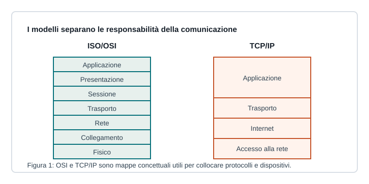

Capitoletto 2.1
Comunicazione e modelli di rete
Una rete permette a dispositivi diversi di scambiarsi dati seguendo regole comuni. I modelli a livelli aiutano a capire chi fa cosa.

Protocollo, servizio e interfaccia
Un protocollo definisce formato dei messaggi, ordine degli scambi e regole di comportamento. Un servizio è ciò che un livello offre al livello superiore. L'interfaccia indica come il livello superiore può usare quel servizio.
Questa separazione permette di cambiare una tecnologia senza riscrivere tutto: un'applicazione web può funzionare su Wi-Fi, Ethernet o rete mobile perché usa servizi di livelli inferiori.
Modello ISO/OSI
Il modello OSI divide la comunicazione in sette livelli: fisico, collegamento, rete, trasporto, sessione, presentazione e applicazione. Ogni livello risolve un problema specifico e comunica logicamente con il livello corrispondente dell'altro sistema.
| Livello | Domanda a cui risponde |
|---|---|
| Fisico | come viaggiano i bit sul mezzo? |
| Collegamento | come comunico nella rete locale? |
| Rete | come raggiungo un'altra rete? |
| Trasporto | come collego processi e applicazioni? |
| Applicazione | quale servizio usa l'utente? |
Modello TCP/IP
TCP/IP raggruppa i concetti in livelli più vicini all'implementazione: accesso alla rete, Internet, trasporto e applicazione. Ethernet e Wi-Fi lavorano in basso; IP instrada i pacchetti; TCP e UDP gestiscono la comunicazione tra processi; HTTP, DNS, SMTP e altri protocolli forniscono servizi applicativi.
Incapsulamento
Quando un'applicazione invia dati, ogni livello aggiunge un'intestazione con informazioni di controllo. In ricezione avviene il processo opposto: ogni livello legge e rimuove la propria intestazione.
Messaggio, segmento, pacchetto e frame sono nomi diversi della PDU osservata a livelli diversi.
Ripasso
Perché si usano modelli a livelli?
Per separare responsabilità diverse e rendere più semplice studio, progettazione e manutenzione delle reti.
Che cos'è l'incapsulamento?
È l'aggiunta progressiva di informazioni di controllo ai dati mentre scendono lungo la pila protocollare.